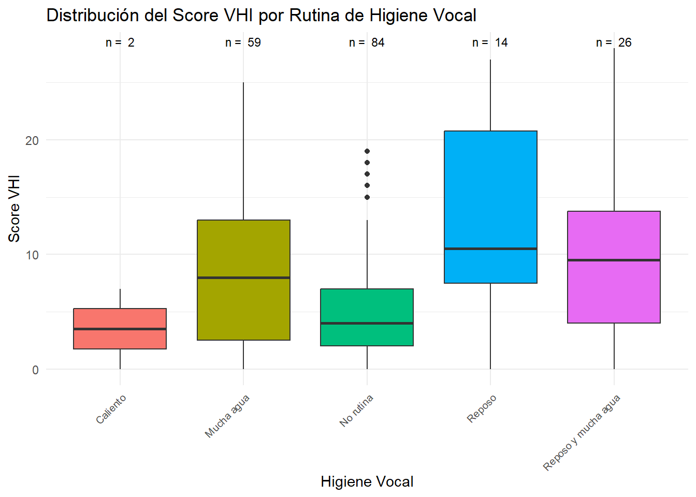

Grupo escuderia_ferrrari: Álvaro Velasco Sobrino, Carlos Bayes Liébana, Miquel Rivas Vanrell
P7: ¿El cuidado de voz mejora la calidad de la misma? ¿Cuál es la mejor medida?
Grupo escuderia_ferrrari: Álvaro Velasco Sobrino, Carlos Bayes Liébana, Miquel Rivas Vanrell
Analizamos la pregunta: “Segueix una rutina d’higiene vocal?” la cual tiene cuatro posibles respuestas de multiselección. Debemos hacer un apunte ya que esto puede suponer un inconveniente dando lugar a contradicciones. Por ejemplo, puede haber alguien que considere que calentar la voz antes de trabajar no es una rutina y que por tanto seleccione las opciones de “Escalf la veu abans de començar la feina” y “No seguesc cap rutina per a la veu”. Es por ello y para evitar contradicciones que hemos encontrado, reordenamos las respuestas en los grupos que se muestran en el gráfico posterior.
Como podemos observar algo no va bien, ya que según las directrices de los doctores, cuanto más baja sea la puntuación, significa mejor rutina. Por este motivo, la mejor rutina sería no seguir ninguna rutina, lo cual es sorprendente. Ahora, hay que remarcar que tenemos pocos datos como para que sea concluyente, ya que solo hay dos personas que calientan y hacen reposo, dos que calientas, hacen reposo y beben mucha agua etc. Así, podemos intentar agrupar estas categorías con menos integrantes en otras. De este modo se obtiene:
data <- data %>% dplyr::mutate(higiene_vocal =case_when( higiene_vocal =="Calienta y reposo"~"Reposo", higiene_vocal =="Calienta, reposo y mucha agua"~"Reposo",TRUE~ higiene_vocal # Para mantener las categorías que no coincidan ))resumen <- data %>%group_by(higiene_vocal) %>%summarise(observaciones =n())# Crear el boxplot con los conteosggplot(data = data, aes(x = higiene_vocal, y = VHI, fill = higiene_vocal)) +geom_boxplot() +labs(title ="Distribución del Score VHI por Rutina de Higiene Vocal",x ="Higiene Vocal", y ="Score VHI") +theme_minimal() +theme(axis.text.x =element_text(angle =45, hjust =1, size =7.5),legend.position ="none") +geom_text(data = resumen, aes(x=higiene_vocal, y=Inf, label =paste("n = ", observaciones)),position=position_dodge(0.9) , vjust =1.5, size =3)

Como podemos observar, sigue sin tener sentido lógico. Aún así, esto puede deberse a un error formulatorio de la pregunta. Habría que aclarar el motivo por el cual un individuo realiza una rutina ya que puede venir motivado por el haber tenido problemas con la voz, en vez de que el motivo principal sea la prevención. Como solución, podríamos poner una pregunta previa a las que corresponden al VHI que clarificara el motivo de llevar una rutina.
Como se han observado contradicciones lógicas con los resultados del gráfico, buscamos hacer una comparación con otra pregunta para ver si obtenemos mejores resultados. Para realizarlo, nos compararemos estas respuestas con la pregunta: “Ha tengut problemes de veu importants i que li han dificultat la feina al llarg del curs 2022-2023?”.
Test de inferencia
Usaremos el test de chi cuadrado donde nuestra hipótesis nula es “No hay relación entre los cuidados de la voz y la calidad de la misma” y la hipótesis alternativa es “Si hay relación entre los cuidados de la voz y la calidad de la misma”. Realizamos el test
# Crear tabla de contingenciatabla_contingencia <-table(data$higiene_vocal, data$VHI)# Prueba Chi-cuadradochisq_result <-chisq.test(tabla_contingencia)chisq_result
Como nuestro p-valor=0.1177>0.05, aceptamos la hipótesis nula y por tanto, no hay relación entre el cuidado de la voz y la calidad de la misma.
Cálculo de las OR
Aunque la prueba chi cuadrado no haya mostrado resultados satisfactorios, intentemos sacar conclusiones mediante las OR. En particular queremos ver si beber mucha agua es un factor protector o un factor de riesgo. Veamos primero la tabla de contingencia:
Tabla de Contingencia: Consumo de Agua y Problemas de Voz
Frecuencia de personas que beben agua y tienen problemas de voz
No
Si
Mucha agua
43
16
No rutina
76
8
Haciendo los cálculos tenemos que \(OR(\text{Tener problemas}|\text{Mucha agua}) = 3.535\), por lo tanto las odds de tener problemas de voz cuando una persona bebe agua son 3.535 veces las odds de tener problemas de voz cuando una persona no sigue rutina. Esto implica que beber agua es un factor de riesgo. La conclusión es bastante desfavorable ya que nos indica que beber mucha agua es problemático para la voz. Aunque tengamos pocos datos, hagamos lo mismo para ver si hacer reposo es un factor de riesgo.
Tabla de Contingencia: Hacer Reposo y Problemas de Voz
Frecuencia de personas que hacen reposo y tienen problemas de voz
No
Si
No rutina
76
8
Reposo
9
5
En este caso la \(OR(\text{Tener problemas}|\text{Reposo})=5.278\), lo que nos vuelve a decir que hacer reposo después de las clases es un factor de riesgo, cosa que también nos parece contradictoria.
Respuesta a la pregunta 7: El resultado del test inferencial, cuadra con el gráfico anterior, ya que este da a entender que el mejor hábito para la voz es no seguir ninguna rutina. Por otra parte, las OR nos dicen que beber mucha agua o hacer reposo son factores de riesgo para la calidad de la voz. Aún así, existe la posibilidad de que, debido a la formulación de las preguntas o la ausencia de ellas, no se recopile toda la información de forma adecuada para esclarecer de manera correcta la pregunta, como por ejemplo, la razón por la que se empieza una rutina, como hemos explicado anteriormente.